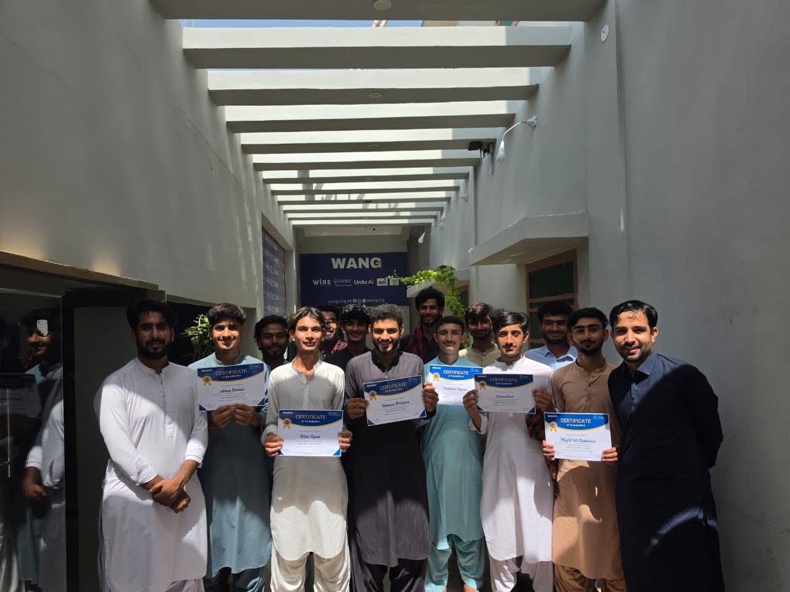
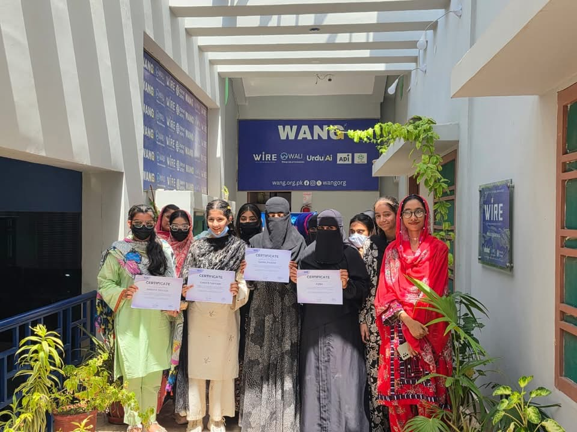
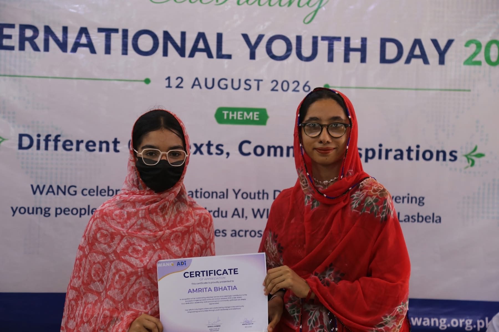
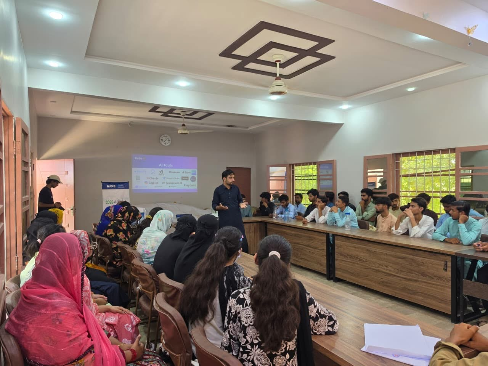
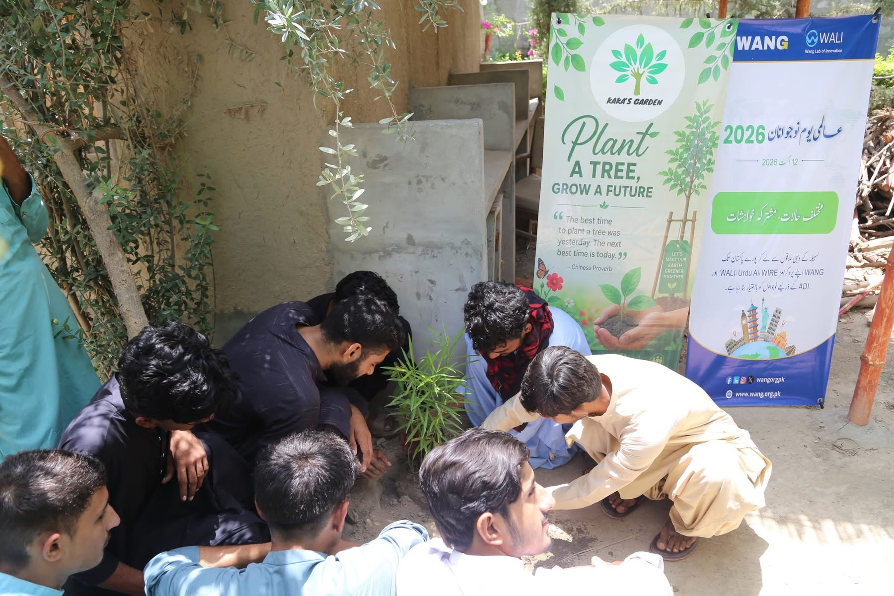
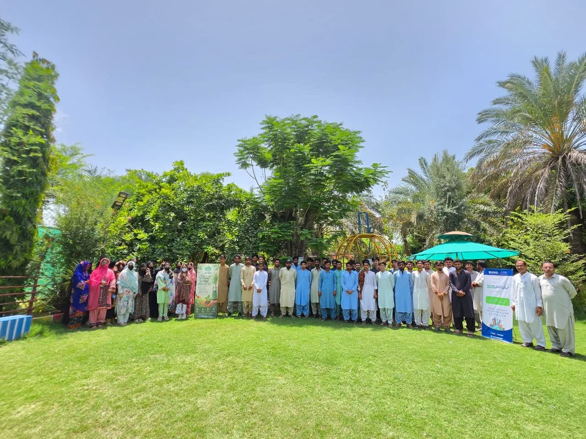

For WANG, International Youth Day has never been merely a celebration. It is a reminder of what becomes possible when young people are trusted, equipped, and given meaningful opportunities to lead.
Under the theme “Different Contexts, Common Aspirations,” WANG marked International Youth Day 2026 through learning, service, recognition, and collective action. The day brought together recent graduates, volunteers, facilitators, and community members in Balochistan.
Celebrating WALI graduates
At the WANG Lab of Innovation — WALI — recent graduates received certificates after months of learning and skills development. The certificates represent more than the completion of a course. They mark another step in each young person's journey towards greater confidence, opportunity, and independence.
Learning becomes meaningful when participants can see their progress and imagine where their new skills might take them. Recognising that progress in front of peers and community members made graduation part of a wider culture of encouragement.


Honouring the volunteers who make community work possible
WANG also recognised volunteers for the time, energy, and commitment they continue to invest in their communities. Volunteerism has always been at the heart of WANG. It is encouraging to see a new generation step forward, take responsibility, and help shape positive change across Balochistan.
Recognition matters because community service is often quiet work. It happens through showing up, helping others learn, organising local activities, and taking responsibility when something needs to be done.

Making artificial intelligence practical and accessible
Through Urdu AI, participants took part in a practical artificial intelligence skills session. They explored how AI can support learning, creativity, problem-solving, and everyday life.
This work matters deeply to WANG. A young person's geography should never determine whether they can understand and benefit from the technologies shaping our collective future. Local-language learning and community-based support can turn an unfamiliar technology into a useful tool.

Leadership that cares for the environment
The learning continued beyond the classroom through tree plantation and environmental awareness activities. By connecting digital opportunity with environmental responsibility, young people demonstrated that leadership is not only about preparing for the future. It is also about taking care of the communities and environment we share today.

Different activities, one shared belief
By the end of the day, participants had planted trees, explored AI, celebrated graduates, and honoured volunteers. These may appear to be different activities, but they are united by one belief:
When we invest in young people, we invest in the future of our communities.
International Youth Day 2026 was a powerful reflection of what young people can accomplish when they are given the space, skills, and trust to act.
